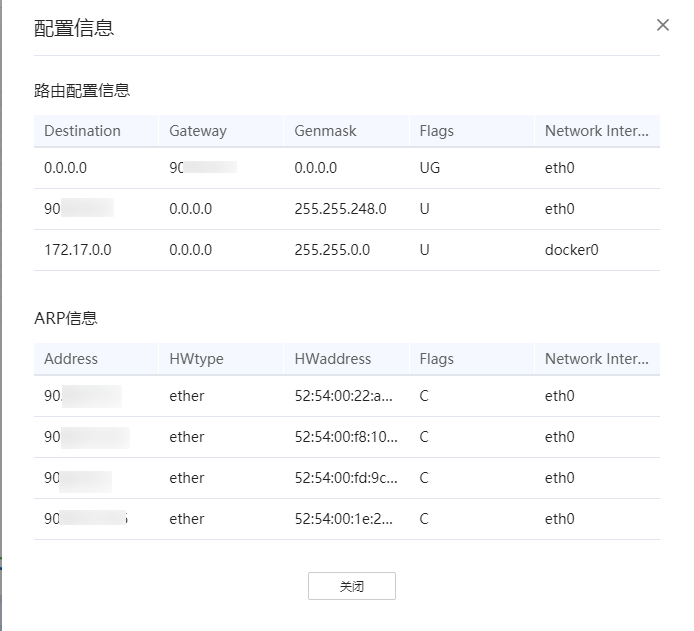

前提条件
已创建网络IO诊断任务，并且成功完成分析。
操作步骤
- 在“工程管理”区域，依次单击指定工程和分析任务名称前的
 。
。展开节点列表。
- 单击节点名称查看分析结果。
单击节点名称默认打开“连通性拨测”页签，如图1所示，参数说明如表1所示。

- 若分析连通性拨测成功，拨测KPI图连通，点击服务器，弹窗显示配置信息；若分析连通性拨测失败，拨测KPI断开，显示拨测失败原因及建议。
- 拨测成功后，可点击服务器图标下的“配置信息”，弹框展示服务器配置信息。
表1 连通性拨测页签-参数说明 参数
说明
发包
显示发送数据包数量。
收包
显示接受数据包数量。
丢包率（%）
显示数据包丢包比例。
最大值
显示时延最大值。
最小值
显示时延最小值。
平均值
显示平均时延。
标准偏差
显示平均偏差时延。
路由序号
显示路由序号。
路由设备IP
显示路由设备IP。
响应时间1（ms）
显示路由响应时间。
响应时间2（ms）
显示路由响应时间。
响应时间3（ms）
显示路由响应时间。
图2 配置信息
表2 配置信息-参数说明 参数
说明
Destination
显示本地地址。
Gateway
显示网关信息。
Genmask
显示掩码信息。
Flags
显示网络接口状态。
Network Interface
显示网口信息。
Address
显示网络地址。
HWtype
显示网卡类型。
HWaddress
显示mac地址。
拨测类型选择“TCP拨测”时，TCP拨测如图3所示，参数说明如表3所示。
表3 TCP拨测-参数说明 参数
说明
连接信息
连接ID
显示拨测时连接的ID。
客户端IP
显示拨测时客户端IP地址。
客户端端口
显示拨测时客户端端口。
服务端IP
显示拨测时服务端IP地址。
服务端端口
显示拨测时服务端端口。
拨测统计信息
连接ID
显示拨测时连接的ID。
时间间隔（s）
显示拨测时采集数据的时间间隔。
传输数据量（MB）
显示某一时间间隔内传输的数据量。
带宽（Mbits/sec）
显示某一时间间隔内的带宽。
重传
显示是否存在数据失败重传的情况。
窗口大小（MB）
显示拨测时TCP数据窗口大小。
操作
显示详细信息，点击可查看。
拨测类型选择“UDP拨测”时，如图4所示，参数说明如表4所示。
表4 UDP拨测-参数说明 参数
说明
连接信息
连接ID
显示拨测时连接的ID。
客户端IP
显示拨测时客户端IP地址。
客户端端口
显示拨测时客户端端口。
服务端IP
显示拨测时服务端IP地址。
服务端端口
显示拨测时服务端端口。
拨测统计信息
连接ID
显示拨测时连接的ID。
时间间隔（s）
显示拨测时采集数据的时间间隔。
传输数据量（MB）
显示某一时间间隔内传输的数据量。
带宽（Mbits/sec）
显示某一时间间隔内的带宽。
延时抖动（ms）
显示延时抖动时间。
丢失数据包/总数据包
显示数据传输时丢失数据包和总数据包数。
操作
显示详细信息，点击可查看。
丢包率（%）
显示丢包率。
- 单击“网络负载监控”页签。
- CPU利用率区域可通过下拉列表切换CPU core和NUMA NODE查看详情。
- 网卡可通过下拉列表进行切换查看网络吞吐量图。
表5 网络负载监控-参数说明 参数
说明
CPU利用率
CPU core
显示CPU核编号。
MUMA NODE
显示MUMA编号。
%user
显示在用户态运行时所占用CPU总时间的百分比。
%nice
显示在用户态改变过优先级的进程运行时所占用CPU总时间的百分比。
%system
显示在内核态运行时所占用CPU总时间的百分比（不包括硬件中断和软件中断的时间）。
%iowait
显示CPU等待磁盘I/O操作导致空闲状态的时间占CPU总时间的百分比。
%irq
显示CPU服务硬件中断所花费时间占CPU总时间的百分比。
%soft
显示CPU服务软件中断所花费时间占CPU总时间的百分比。
%idle
显示CPU空闲且系统没有未完成的磁盘I/O请求的时间占总时间的百分比。
CPU负载
runq-sz
显示运行队列的长度，即等待运行任务的数量。
plist-sz
显示在任务列表中的任务的数量。
ldavg-1
显示最后1分钟的系统平均负载。
ldavg-5
显示最后5分钟的系统平均负载。
idavg-15
显示最后15分钟的系统平均负载。
blocked
显示当前阻塞的任务数，正在等待I/O完成。
内存利用率
total（KB）
显示系统总的可用内存大小。
free（KB）
显示剩余可用内存大小。
used（KB）
显示已被使用的内存大小。
%used
显示已被使用的内存占总内存的百分比。
avail（KB）
显示可被应用程序使用的内存大小。
buffers（KB）
显示显示被buffer的内存大小。
cached（KB）
显示显示cache中的内存大小。
网络IO统计
IFACE
显示网络接口名称。
rx（pck/s）
显示每秒接收的数据包总数。
tx（pck/s）
显示每秒发送的数据包总数。
rx（KB/s）
显示每秒接收的字节总数。
tx（KB/s）
显示每秒发送的字节总数。
在“网络负载监控”页签下的网络IO统计区域，点击网卡会弹出详细信息页面。
图6 网卡信息
表6 网卡信息页面参数说明 参数
说明
网络配置信息
Network Interface
显示网卡名称。
Status
显示网卡状态。
IPv4
显示是否支持IPv4协议类型。
IPv6
显示是否支持IPv6协议类型。
Supported Port
显示支持的端口。
Speed（Mb/s）
显示网络速率。
Duplex
显示网卡工作类型。
NUMA NODE
显示绑定的NUMA NODE。
driver
显示驱动名称。
version
显示驱动版本。
firmware version
显示软件的版本号。
adaptive-rx
显示接收队列的动态聚合执行功能开关状态。
adaptive-tx
显示发送队列的动态聚合执行功能开关状态。
rx-usecs
显示产生一个中断之前至少有一个数据包被接收之后的微秒数。
tx-usecs
显示产生一个中断之前至少有一个数据包被发送之后的微秒数。
rx-framcs
显示产生中断之前发送的数据包数量。
rx-checksumming
显示接收包校验和开关状态。
tx-checksumming
显示发送包校验和开关状态。
scatter-gatter
显示分散/聚集功能开关状态。
TSO
显示TCP-segmentation-offload开关状态。
UFO
显示UDP-fragmentation-offload开关状态。
LRO
显示large-receive-offload开关状态。
GSO
显示generic-segmentation-offload开关状态。
GRO
显示generic-receive-offload开关状态。
Tx
发送的环形缓冲区大小，单位为字节。
Rx
接收的环形缓冲区大小，单位为字节。
绑定名称
显示绑定网卡名。
模式
显示模式信息。
Destination
显示本地地址。
Gateway
显示网关信息。
Genmask
显示掩码信息。
Flags
显示网络接口状态。
Address
显示网络地址。
HWtype
显示网卡类型。
HWaddress
显示mac地址。
Flags
显示网络接口状态。
中断及XPS/RPS信息
硬中断编号
显示硬中断编号。
设备信息
显示设备信息。
PCIE设备BDF号
显示PCIE设备BDF号。
中断事件名称
显示中断事件名称。
中断绑核信息
显示中断绑核信息。
中断频率（次/s）
显示中断频率。
网络设备名称
显示网络设备名称。
xps_cpus
显示xps绑核的CPU。
rps_cpus
显示rps绑核的CPU。
rps_flow_cnt
显示每个队列负责flow的最大数量。
软中断信息
显示软中断信息。
CPU核
显示CPU核编号。
硬中断绑核数量
显示硬中断绑核数量。
XPS绑核数量
显示XPS的绑核数量。
RPS绑核数量
显示RPS的绑核数量
软硬中断频率（次/s）
显示软硬中断的频率。
占用网络IO的进程
Local Interface
显示本端网口。
Protocol
显示支持的网络协议类型。
Local IP
显示本端IP。
Local Port
显示本端端口。
Remote IP
显示对端IP
Remote Port
显示对端端口。
PID
显示进程的进程号。
Command
显示具体操作信息。
- 单击“丢包诊断”页签。
单击“查看排查建议”可以查看系统给出的排查建议。
如参数后有
 图标，可以点击进行搜索需要参数。
图标，可以点击进行搜索需要参数。表7 丢包诊断参数说明 参数
说明
网卡硬件和驱动丢包
IFACE
显示网络接口名称。
rxerr/s
显示每秒接收到的损坏的数据包数量。
txerr/s
显示发送数据包时，每秒发生错误的总数。
coll/s
显示每秒发生冲突的数据包数量。
rxdrop/s
显示发送数据包进入Ring Buffer后，每秒钟丢弃的数据包的数量。
txdrop/s
显示接收数据包进入Ring Buffer后，每秒钟丢弃的数据包的数量。
txcarr/s
显示每秒发送的载波错误数。
rxfram/s
显示接收数据包时，每秒发生的帧对齐错误数。
rxfifo/s
显示接收数据包时，每秒发生FIFO溢出错误的次数。
txfifo/s
显示发送数据包时，每秒发生FIFO溢出错误的次数。
协议栈缓存队列丢包
Queue（CPU core）
显示CPU核队列。
received/s
显示每秒接收的协议栈缓存。
drop/s
显示每秒丢弃的协议栈缓存。
drop rate（%）
显示丢包率。
内核调用栈丢包
函数名称
显示调用函数的名称。
模块名称
显示调用模块的名称。
协议类型
显示数据包的协议类型。
SKB丢弃次数
显示SKB丢包次数。
调用栈信息
显示调用栈信息。
- 单击“网络抓包”页签。